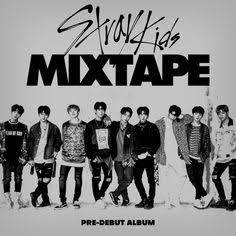
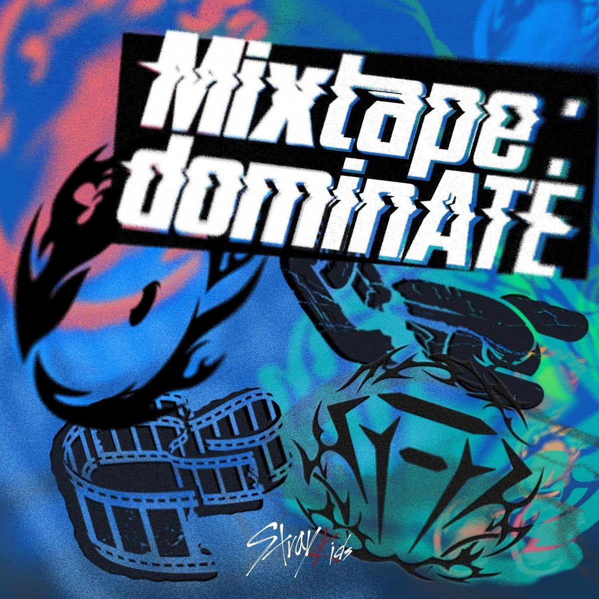

|
 |
Antes de convertirse en el grupo que conocemos hoy, Stray Kids nació de un programa de supervivencia transmitido por Mnet entre octubre y diciembre de 2017.
A diferencia de otros realities de la época, la dinámica no consistía en eliminar integrantes, sino en demostrar como equipo que merecían debutar todos juntos.
Nueve aprendices, guiados por Bang Chan y bajo la mirada de J.Y. Park, compusieron sus propias canciones y enfrentaron distintas pruebas de canto, baile y producción musical. De esa experiencia nació "Hellevator", el primer tema autocompuesto que se convertiría en la base de su futuro álbum debut. |
| Periodo | Octubre 2017 - Enero 2018 |
| Programa | Stray Kids (Mnet, reality de supervivencia) |
| Primer mini álbum | Mixtape (8 de enero de 2018) |
| Canción clave | Hellevator |
